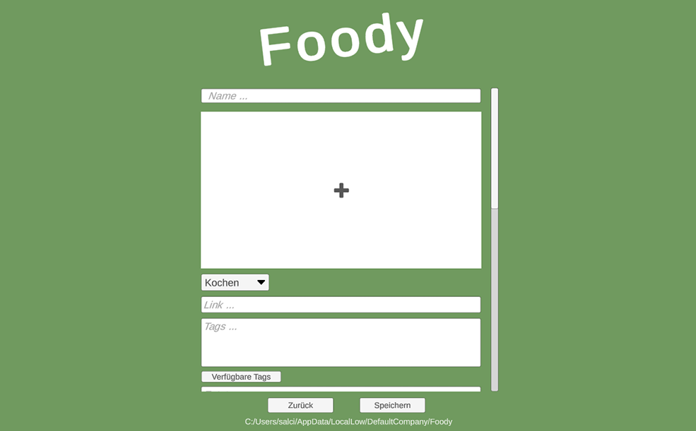
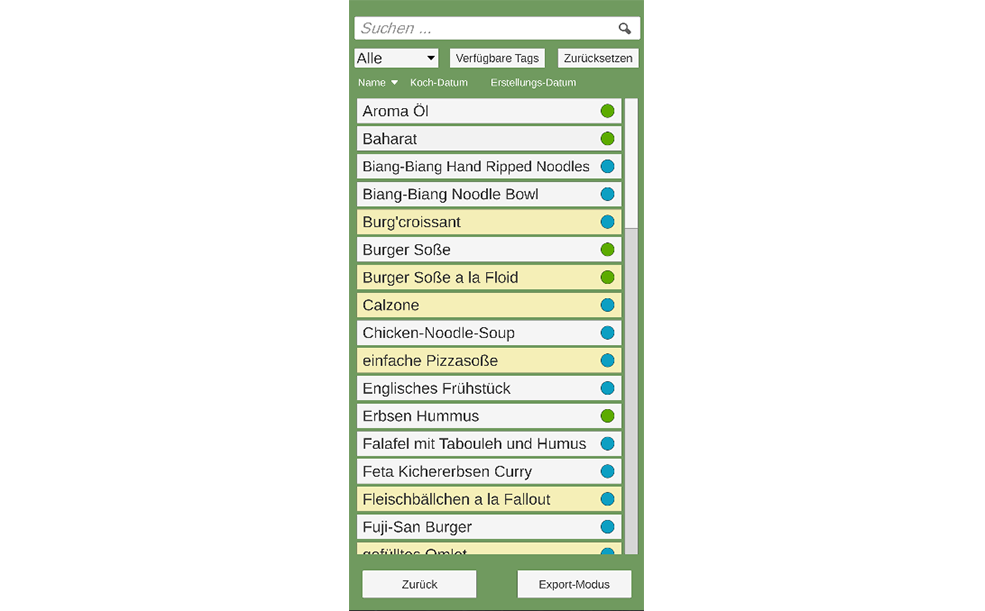
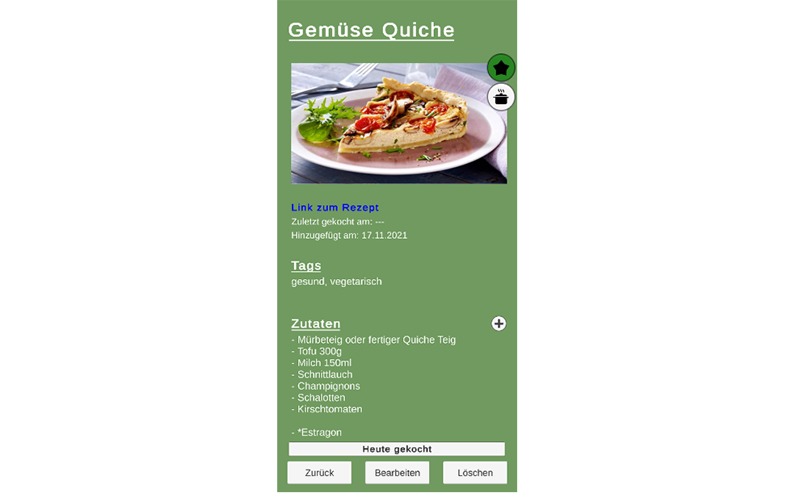
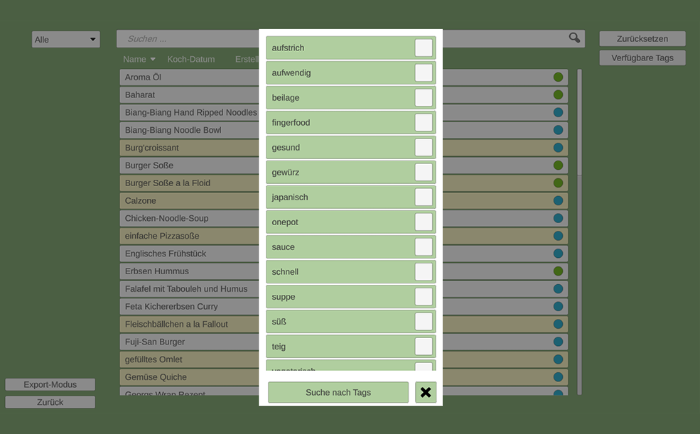
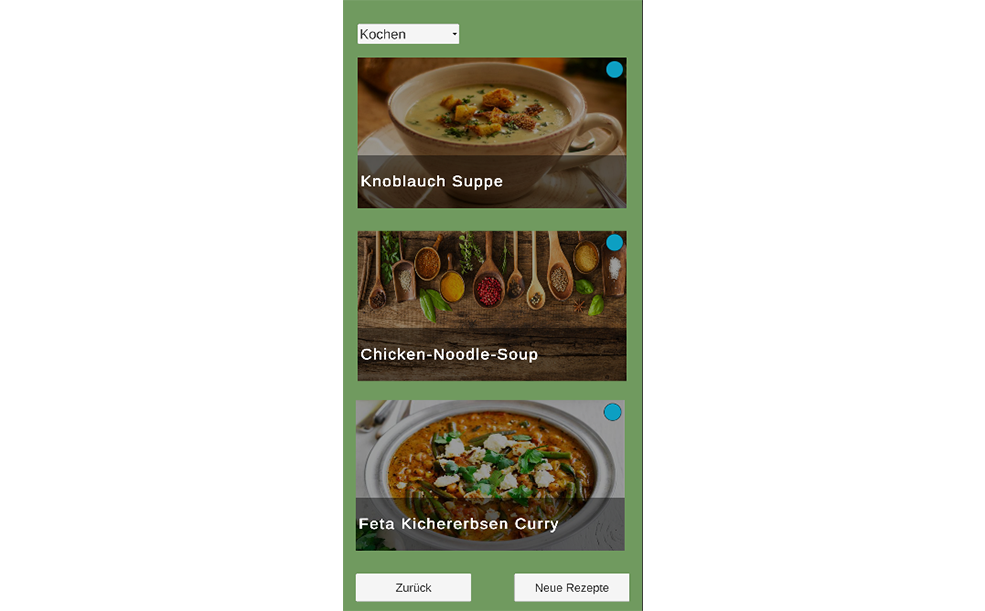

1 / 6

2 / 6

New recipes can be added with all important data and a picture.
3 / 6

The picture shows the mobile version. All recipes are sorted alphabetically in a list.
4 / 6

The card shows all important information for the recipe.
5 / 6

Each recipe can be tagged and these tags can be filtered.
6 / 6

The Lotter Function offers three random recipes from the list and shows the pictures.
Foody
Description
This app is not a game, but it was created within Unity. It's a little application for managing and organizing cooking recipes. The development in Unity has made it possible to easily create a PC and a mobile version simultaneously.
Date
10/2021 - 11/2021